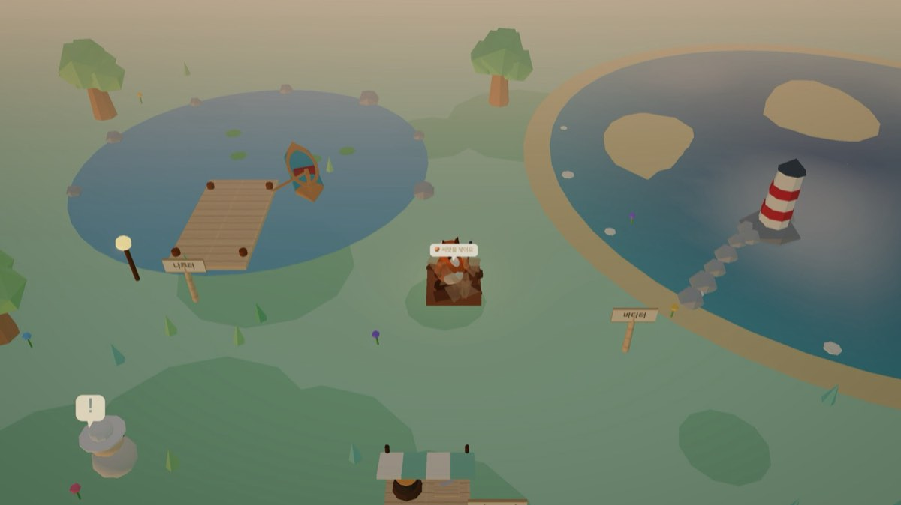
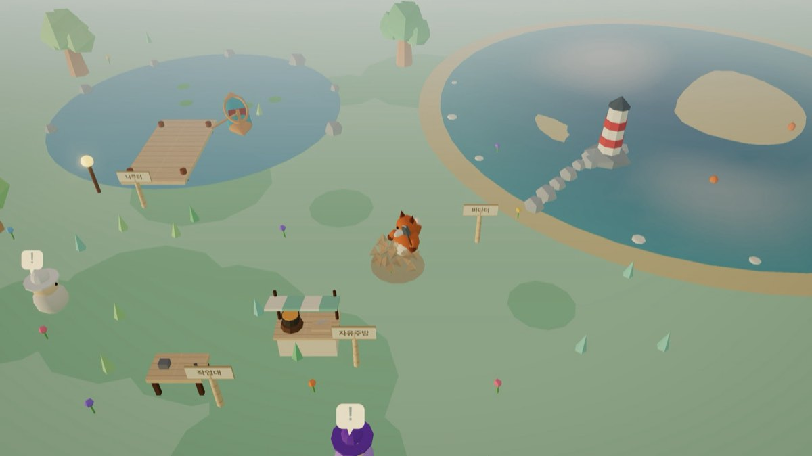

A cozy forest village where you chop trees, tend fields, fish, and build your own house. This guide walks you through your first 30 minutes with real in-game screens.
Title screen · works on PC browsers and phones · as of September 2026 (screens shown in Korean)
QUICK GUIDE 1 · FIRST 30 MINUTES
Do these six things and you know the basics
Follow them in order and coins, fields, a house, and fishing all open up at once. The later chapters expand on these six steps.
1 🪓 Chop three trees
Pick the axe from the outdoor tool set and press Space 3 times. Each tree gives +5 wood.
2 🧙 Sell to the visiting merchant
Once you hold 5 wood, the merchant walks over to you. +30🪙, three times the usual price, one time only.
3 🌰 One plot, seed to harvest
Till with the hoe → plant a seed → water 3 times → harvest with the sickle.
4 🎣 One fish from the lake
Cast from the pier. When "Bite!" appears, press Space again within 1.4 seconds.
5 🔨 Build a house and step inside
Hammer inside the circle three times. 30 wood gets you all the way to the roof.
6 🎨 Place one piece of furniture
Furniture costs crops, not coins. A rug is 2 crops.
There's no rush. You start with 0 coins, so chopping first is the quickest way to get going. Everything else can be done in whatever order you like. The game saves itself every 30 seconds.
QUICK GUIDE 2 · CONTROLS
Only two things to remember, move and act
Using a tool, talking, opening doors, and picking things up are all the same key. On PC it's Space; on a phone it's the one round button at the bottom right.
🖥️ PC · keyboard and mouse
WASD move (arrow keys work too) Space act · dismiss a hint 1 switch tool set 2~5 pick a tool in the current set C sit · R rotate furniture
📱 Phone · touch
Drag the joystick at the bottom left to move
The bottom-right button acts (its icon changes: tool · 💬 talk · 🚪 door · place furniture)
The 🎒 chip at the front of the toolbar = switch set
Menu is ☰ at the top left
There is no run key. Instead, eat 🥘 vegetable porridge or 🍄 mushroom soup to move 40% faster for a while. If the village feels big, cook first.
Phone in portrait: joystick and action button
01 · STARTING THE GAME
Open the page and pick an animal friend
Chrome is recommended. On a phone, portrait is the most comfortable.
1Open calmforest.cloud (or this page). Choose Google sign-in or "Look around as a guest".
2Seven characters: fox, dog, rabbit, cat, bear, panda, chick. Names are 2 to 16 characters, or tap 🎲 for a random one.
3A short prologue plays. You can skip it with Skip › at the top right.
4Once you arrive in the village, press Start tutorial 🌱 and learn one step at a time.
Guest progress is not kept. Next visit you get a fresh village. If you plan to stay a while, sign in with Google from the start. You can change your character later from the ☰ menu; your house, fields, and collection stay as they are.
Title screen: Google sign-in / look around as a guest
Seven characters and the name field
Prologue cutscene, skippable
Welcome card: start the tutorial
02 · READING THE SCREEN
What's on one screen
The numbers match the positions in the photo on the right.
1Menu cluster: 📷 photo · 🙂 emote · ☰ menu
2Minimap: your position and key places
3Story chip: your current goal. Tap for details
4Inventory: 🪵 wood · 🌰 seeds · 🥕 crops · 🪙 coins. Tap 🎒 to see everything
5Day/night slider: turn the clock yourself
6📖 Collection and 💬 Feedback
7Hint bubble: shows what you can do right now
8Toolbar: the front chip switches sets (1), the four slots behind it are tools (2~5)
You start in the middle of the village. A villager with a ❕ bubble has a favor to ask.
At first, just watch the hint bubble. Whatever you can do nearby pops up on its own, so you don't need to memorize the layout.
03 · TOOL SETS
Eight tools, three sets
You own all eight from the start. The toolbar shows one set at a time, so if a tool seems to be missing, press 1 (🎒 on phone) to flip sets.
Set
Tools (slot)
What they do
🌾 Farming starting set
⛏️ Hoe 2 · 🌰 Seeds 3
Till soil (also mines in the cave) · plant seeds
💧 Watering can 4 · 🌾 Sickle 5 · Shovel 6
Water (crops only grow when watered) · harvest · dig an empty plot twice to turn it back to grass
🏕️ Outdoor
🪓 Axe 2 · 🔨 Hammer 3
Chop trees · build and expand your house
🎣 Fishing rod 4 · 🦋 Net 5
Lake fishing · catch fireflies at night
✋ Bare hands
-
Switches on automatically in the foraging woods, indoors, and at the café
Sets switch on their own when you enter an area. The cave opens the farming set, the lakeside opens the outdoor set. Spend materials at the workbench for permanent upgrades: steel axe, big watering can, sturdy rod.
🎒 Bag: resources, farming/fishing materials, minerals, and foraged items at a glance
You have to actually do each step to move on. The 17 dots are your progress. Skipping is allowed, but if it's your first time, going all the way through is recommended.
1 Walk around the village 2 Switch tool sets 3 🪓 Chop a tree 4 🛒 Sell wood 5 ⛏️ Till empty ground 6 🌰 Plant a seed 7 💧 Water it 8 🌾 Harvest with the sickle 9 📊 Check the price board
10 Take a villager quest 11 ⛏️ Mine ore in the cave 12 🗿 Try a carving order 13 📖 Open the collection 14 🎣 Fish in the lake 15 🔨 Build a house 16 🚪 Go inside 17 🎨 Decorate with furniture
Coach card: your current task and progress dots at the top left
When you finish, a 🎉 Tutorial complete! message appears. The chapters that follow expand on these 17 steps. Feel free to jump to just the part you're stuck on.
05 · FIRST 10 MINUTES
Three trees earn your first coins
You start with 0 coins, so the very first job is chopping.
1Press 1 to open the 🏕️ outdoor set and 2 to take the axe.
2Stand right next to a tree and press Space 3 times. Each tree gives +5 wood (1+1, then 3 when it falls). It regrows after 12 seconds.
3Once you hold 5 wood, the 🧙 wandering merchant walks over. "Sell 5 wood for +30🪙", three times the usual price.
4Now you have 30 coins. Buy 🌰 seeds or 🌱 fertilizer at the east stall, or just save up.
Weather and food make it pay better. On ❄️ snowy days branches snap easily and drop more wood, and a 🍱 lunch box gives +1 wood per chop.
Axe in hand, next to a tree, press Space
The third hit fells it: +3 wood
The wandering merchant's welcome deal, a one-time offer
06 · FARMING
Till → plant → water → cut
You start with 8 seeds. Every harvest returns +1 crop and +2 seeds, so you'll almost never run short.
1⛏️ Hoe: Space on empty ground. You can't make plots near trees, the lake, or the house site. Move a little.
2🌰 Seeds: Space on a tilled plot. One of carrot, tomato, blueberry, or pumpkin grows at random.
3💧 Watering can: wet soil won't take water for 5 seconds. Water 3 times, 5 seconds apart.
4🌾 Sickle: when the "Harvest!" marker shows, press Space.
Go 22 seconds without watering and the crop wilts (🥀). Re-till a wilted plot with the hoe. On 🌧️ rainy days crops grow without watering, and 🌱 fertilizer (20🪙) makes them harvestable right away.
Removing a plot: if you tilled the wrong spot or the village is covered in plots, take the shovel (6) from the 🌾 farming set and press Spacetwice in front of an empty plot. The first dig roughs up the furrows and shows "Dig once more to remove"; you have 6 seconds to dig again (after that it goes back to normal). Plots with crops must be harvested or cleared with the hoe first. Filled-in spots sometimes drop 📖 collection items from "Underground".
① Till with the hoe: "Plant a seed"
② Plant a seed and ③ water
After three waterings, the "Harvest!" marker
④ Harvest with the sickle; it's added to your collection too

One shovel dig: furrows roughed up, "Dig once more to remove"

Dig again within 6 seconds: the plot returns to grass
07 · MY FIELD · SHOP · PRICES
Plant wide in your field, sell at the stall
Walk through the 🌾 My Field arch at the south of the village and you get a big field of your own. Planted crops are saved as they are; leave through the south gate.
My Field: six plots at once
🛒 How to sell: Space in front of the stall. Tap a slot to sell 1, hold to sell all.
Shop buy tab: 5 seeds (15🪙) · 🌱 fertilizer (20) · 🪱 bait (25) · wood · stone · coal. Items you can't afford are dimmed
📊 Prices shift by up to ±30% every midnight. Selling on a red arrow (expensive) is the win. The merchant's stall bubble also tells you today's priciest item.
08 · BUILDING YOUR HOUSE
A hammer and 30 wood gets you a roof
It's the "🏠 Build your house here" spot with the green circle, northwest of the village.
1Take the 🔨 hammer (3) from the 🏕️ set and press Space inside the circle. Each hit spends 10 wood: deck → log walls → roof, three stages.
2Roof on means done! You earn the 🏠 "Home Owner" badge (+20🪙) and the story chapter 1 reward (+40🪙).
3Space at the door → inside. Use 🎨 Decorate to place furniture. Furniture costs 🥕 crops, not coins (only the fish tank costs 🐟 fish). R rotates.
4Outside the house you can change roof, wall, and door colors and expand. Stage 4 big house (30 wood · 15 stone · 80🪙) → stage 5 mansion → stage 6 modern house.
Colors unlock as you play. Fishing and harvesting have a chance to unlock new roof, wall, and door colors.
Stage 2 log walls: one more hit for the roof
Done! "🚪 Enter house" at the door
Indoor 🎨 Decorate: from a 2🥕 rug to a 10🥕 big sofa
Stage 6 modern house, rooftop terrace included
09 · LAKE FISHING
Cast, wait, and press once more on the bite
At the lake southeast of the village, from the wooden pier. You can't walk into the water.
1Take the 🎣 rod (4) and press Space at the water's edge → the bobber flies out.
2After 1.5 to 4 seconds, "❗ Bite! Reel it in now!" appears.
3Press Space again within 1.4 seconds. Too late and it gets away 🐟💨.
4Pressing again while waiting reels the line back in. Switching tools or walking away also cancels.
Fish
Chance
Notes
🐟 Minnow
72%
The most common
🐠 Red fish
21%
Sells well
🌈 Rainbow fish
7%
Better odds on 🌧️ rainy days and with 🪱 bait
Keep missing? Upgrade the rod. Craft the sturdy rod at the workbench (10 wood + 3 fish) and the reel-in window grows to 2.6 seconds.
"❗ Bite!": press Space at this moment
A big one! The catch screen
10 · NEIGHBORS AND QUESTS
Talk to any villager with a bubble
Walk up and press Space (💬 Talk on phone). Accept → reach the goal → talk again to collect the reward.
Villager
Where
Requests
First request
🧑🌾 Farmer Uncle
Southeast of the center
4 farming
Chop 3 times → 3 seeds + 5🪙
👷 Carpenter
South of the house site
3 building
10 wood → 3 crops + 10🪙
🧙 Wandering Merchant
East stall
3 trading
Plant 3 seeds (he gives you the seeds)
🎣 Old Fisherman
South of the lake
4 fishing
2 fish → 3 crops + 8🪙
🐼 Chef Panda
Next to the free kitchen
3 cooking
3 crops → 8🪙
🦉 Request Owl
Near the house site
3 daily
10 · 15 · 20🪙 + 🎁 lucky box
❤️ Friendship grows when you craft gifts in the workbench 🎁 tab, like a bouquet (2 crops), fruit basket, or wooden doll. Every 3 levels they send a thank-you (3 seeds + 1 crop), and finishing all five villagers' requests earns the 👑 "Village Hero" badge.
Farmer Uncle's first request: accept
🦉 Today's requests: everyone gets the same three
11 · MINE · WORKBENCH · FREE KITCHEN · CARVING
Dig materials, craft, and cook
⛏️ Mining cave black rock entrance, west of the village
Hit a glittering vein 3 times with the hoe. Stone 55% · coal 35% · 💎 gem 10% (20% on 🌫️ foggy days). Veins respawn after 14 seconds. Stone and coal go into house expansions and the big pot; gems sell for 40🪙. Leave with Space at the "Exit" sign.
🔧 Workbench 4 tabs
Permanent tool upgrades · outdoor decorations (scarecrow, fence, flower bed) · gifts for villagers · 🗿 carving. Carving orders change daily, 3 a day. Tap and drag to chip away the bright pieces and leave only the dark outline; the cleaner the cut, the bigger the reward (22 to 26🪙 × grade).
🍳 Free kitchen east of the workbench
5 recipes. Hand over ingredients and play a minigame. Boiling: tap 3 times when the needle is in the green zone. Chopping: tap to an 8-beat rhythm. Do well and the buff lasts longer. Vegetable porridge (3 crops) = +40% speed for 60s · grilled fish (2 fish) = fishing luck · lunch box = +1 wood per chop · omelet = mining bonus.
Hoeing in the cave: the vein beside the torch
🗿 Carving tab: today's 3 orders
Boiling minigame: tap in the green zone
Mid-carve: leave only the outline
Short on coins? Start here. Three carving orders plus a few gems add up to 100🪙 a day fast. Failing a minigame only costs the ingredients; you lose nothing else.
12 · FOUR PLACES TO THE SOUTH
Café · coop · foraging woods · firefly glade
South of the village are four spots where coins and materials pile up. Many need no tools at all.
☕ Café red-roofed building to the south
Four guests order through bubbles over their heads. Hold the item and press Space beside them to serve. 30 to 46🪙 a cup, and a 60🪙 bonus for serving all four.
🐔 Chicken coop southwest of the field entrance
Unlocks after visiting 2 days in a row (25 wood · 10 stone · 60🪙). Feed 2 seeds and get 2 🥚 eggs the next day. Sell for 6🪙 each or use them in an omelet.
🍄 Foraging woods signpost to the southwest
No tools needed. Press Space next to mushrooms, wild berries, acorns, or herbs to pick them. They regrow in 1 to 2 minutes. Three foraged items make 🍄 mushroom soup (150s of fast feet).
🌟 Firefly glade south of the café · night only
Swing the 🦋 net at the moment a firefly flashes brightest for a 90% catch, otherwise 35%. Collect all 4 kinds for the 🌟 "Night Collector" badge (+40🪙).
13 · FAR-OFF ADVENTURES
Three places beyond the village, once you've settled in
All three are open from the start. Press Space at the signposts on the village edge to enter.
🌊 Sea pier lighthouse to the northeast
A tug of war with big fish. On 🔴 Hold on…! press nothing; on 🟢 Pull!! mash. If you're dragged to the red plank at the end of the pier, it escapes. Horse mackerel (day) · yellowtail · sunfish (night) · ⚔️ tuna (one a day). You weigh them and let them go.
🛶 Ferry landing due north, 12 o'clock
Ride the ferryboat down the river for about 60 seconds. The boat moves on its own; you steer left and right, Space is a sprint. Dodge rocks and logs, collect ⭐ star shards. 💡 3 lamps are your lives. Three runs a day, and the course is the same for everyone that day.
🌫️ Misty forest old-tree arch to the northwest
Start at the 🌳 guardian tree (a practice round first if it's your first time). When shadow spirits approach, slow them with the 🏮 lantern and tap when the ♪ mark is at its smallest to soothe them. It's music, not a fight, so failing costs nothing.
14 · DAY AND NIGHT · WEATHER · NIGHT VISITORS
A day is 8 minutes, one weather per day
When night falls, stars, fireflies, and window lights come on. You can also turn the clock yourself with the slider at the top right. Weather is set by the date, so everyone shares the same weather.
Weather
Chance
On these days
☀️ Clear
55%
Business as usual
🌧️ Rain
20%
Crops grow on their own · faster bites and more rare fish · more mushrooms
❄️ Snow
12%
Chopping drops extra wood
🌫️ Fog
13%
Double gem odds in the cave · fireflies by day · 🌟 golden spirit
🦝 Night visitors: while you're away overnight, raccoons and boars may steal crops from your plots. One 🎃 scarecrow (5 wood) or four 🪵 fences (3 wood each) near the plots keeps them out. Inspect the spot they visited for a collection item.
On days with a ❄️ frost or 🌀 typhoon forecast, harvest early or craft a 🛡️ field cover (3 wood) at the workbench. Wilted crops can be restored with the hoe.
The village at night: torches, window lights, drifting fireflies
🌧️ Rainy day: crops grow without watering
15 · COLLECTION · BADGES · MY STORY
Collect, get recognized, and the story goes on
📖 Collection: 46 entries
Fish 3 · crops 4 · minerals 3 · dishes 5 · neighbors 6 · foraged 4 · fireflies 4 · night visitor traces 2 · underground 3 · river 4 · spirits 4 · weather 4. Entries register automatically on first encounter, and completing it all pays 150🪙. Open it any time with the 📖 button on the right.
🏅 14 badges displayed below the collection
🏠 Home Owner (+20) · 🎖️ First Request Done (+20) · 🔥 Full Week (+30) · 🌈 All-Weather Explorer · ☕ Village Barista (15 cups) · 🛶 First Voyage · 🌫️ Forest Purifier · 👑 Village Hero (+50) · 📖 Collection Master · 🏙️ Dream House (+100) …
📖 My Story: 4 chapters
Tap the story chip at the top left to see it. Ch. 1 My First House (finish the house, +40🪙) → Ch. 2 Forest Neighbors (3 requests) → Ch. 3 A Warm Meal (cook once + serve once) → Ch. 4 Keeper of the Leaf (purify the misty forest, +80🪙). No need to force it. It moves along on its own as you play.
📖 Collection: entries you haven't met yet show as ???
My Story: progress on the current chapter
16 · SAVING · ACCOUNTS · FAQ
Saving is automatic, so don't worry about it
Saves every 30 seconds and when you close the page. There is no save button.
With Google sign-in you continue on any device. Guest progress lasts only for this visit.
📸 Photo album (100 shots) and 📊 activity stats are Google sign-in only. 📷 Taking photos works for everyone.
🏆 Leaderboards, 6 boards: river run · big catch · weekly rich · mining king · cooking king · quests. Weekly boards reset on Monday.
🌐 To switch to Korean, choose Language in the ☰ menu.
☰ Menu: change character/name, leaderboards, photo album, beginner's guide, music, language
Frequently asked questions
My tools disappeared
In the woods, indoors, and at the café you switch to ✋ bare hands automatically. Press 1 (🎒 on phone) to bring them back.
I can't make a plot
Not near trees, the lake, the house site, or the workbench. Move a step or two, or go to My Field.
I want to remove a plot
Take the shovel (6) from the 🌾 farming set and dig an empty plottwice within 6 seconds. If it has a crop, harvest it or clear it with the hoe first.
My crops won't grow
They only grow when watered. 3 times, 5 seconds apart. If wilted, re-till with the hoe.
I keep losing fish
You must press within 1.4 seconds of "Bite!". Craft the sturdy rod to stretch it to 2.6 seconds.
The merchant won't come
He comes exactly once, when you're outdoors in the village holding 5 wood. If he already came, use the east stall.
I'm short on coins
The 🦉 owl's 3 requests (45🪙 + lucky box), café serving, and selling on a good-price day are the fastest.
The sea pier is hard
Pressing on 🔴 drags you in. Hold on, and mash only on 🟢. Start with horse mackerel (daytime).
Where do I report bugs or ideas
The 💬 Feedback button at the bottom right sends it straight to us.
17 · FIRST-DAY CHECKLIST
Just this much for today
20 to 30 minutes is plenty. Finish these and you've learned all the basics of this forest.
🪓 Chop 3 trees (15 wood)
🧑🌾 Take Farmer Uncle's request and collect the reward
🧙 Sell wood to the visiting merchant
🦉 One of the owl's daily requests
🌰 Till one plot and take it to harvest
⛏️ One ore from the cave
🎣 One fish from the lake
🍳 Cook vegetable porridge and stroll on fast feet
🔨 Finish the house and 🚪 step inside
📖 Open the collection and see how many entries there are
🎨 Place one piece of furniture (rug = 2 crops)
🌙 When night falls, visit the firefly glade
Come back tomorrow and the attendance reward, the owl's new requests, new café guests, new carving orders, and a new river course will be waiting. Two days in a row unlocks the chicken coop. The forest is in no hurry 🌲
A big one! The catch screen
Café serving: coins and friendship from dishes you cooked